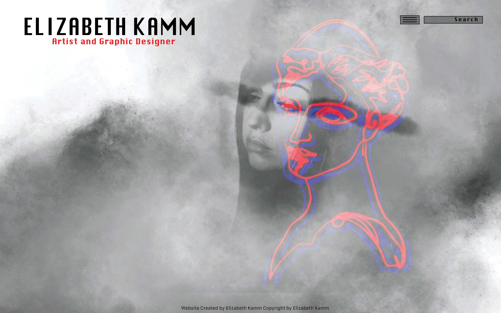
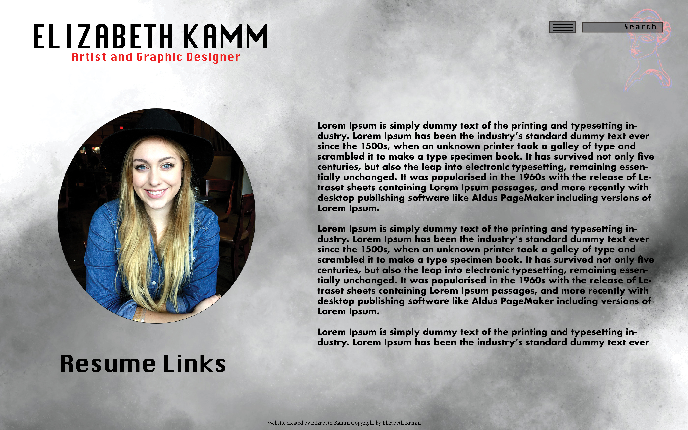
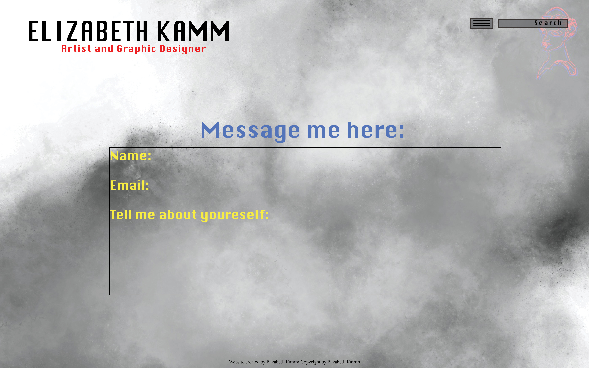
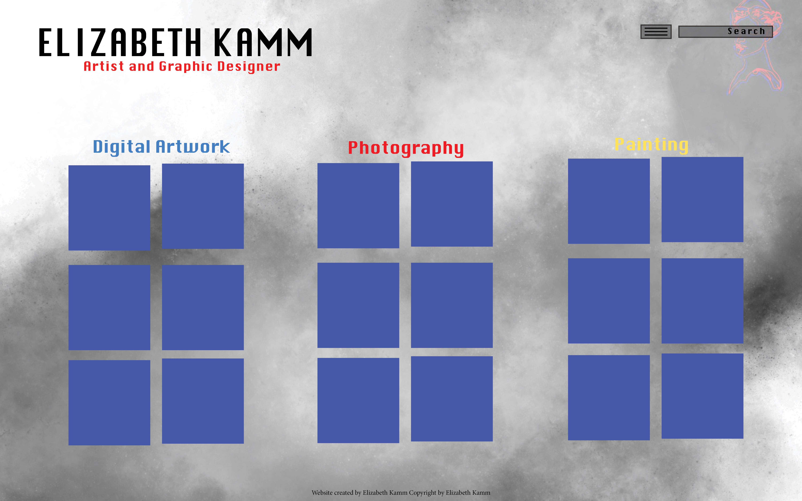

I agreed with everyone about the saturation. Also as much as I liked it, it honestly isnt my style. I like black, red, blue and yellow. Nothing too crazy. I think itll come across better with my artwork and style as well!


